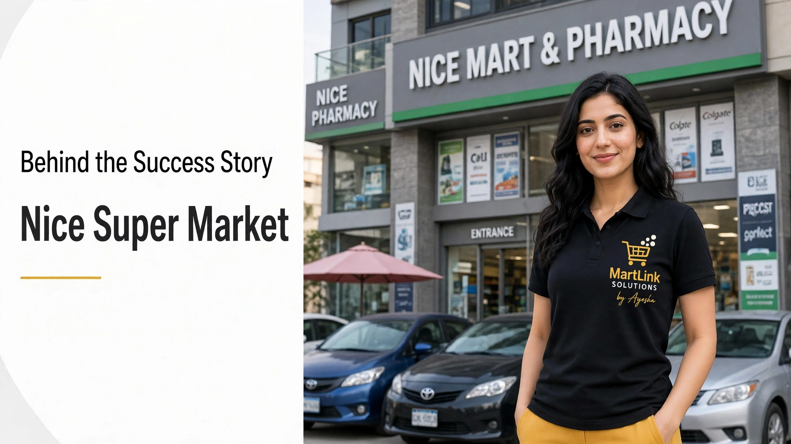

12 min read • Karachi Retail Series • MartLink Solutions
1997 se Imran Sheikh ka business ki taraf interest shuru hua. Shuruat me ye koi bada vision nahi tha, ek chota family brand tha jo dheere dheere seekhta gaya. Retail me aane se pehle ka safar hi wo foundation bana jis ne baad me organized retail ko samajhne me madad di. Har badi retail story ki tarah, yahan bhi starting point chota tha lekin niyat clear thi.
2012 me wo marhala aaya jab organized retail me proper entry hui. Us waqt Karachi me modern supermarket ka concept tez ho raha tha. Pichle 14-15 saal se Nice par musalsal kaam ho raha hai — ye continuity hi asal asset hai. Bohat se log sochte hain ke store kholna hi kaam hai, jabke asal kaam us ke baad shuru hota hai. Products move karna, customers serve karna, price competitive rakhna, stock manage karna.
Dry fruit ka kaam kisi sophisticated plan se nahi, personal requirement se shuru hua. Phir pata chala market me iski zarurat hai. Zarurat → Experiment → Product → Customer Response → Business Opportunity. Yehi classic entrepreneurial journey hai jo aksar elaborate business plan se zyada practical problems se nikalti hai.
20-25 saal pehle packed products par trust nahi tha. Customers ko doubt tha ke packet ke andar kya hai. Imran Sheikh ne shuru se quality control par focus kiya. Unka philosophy simple tha: agar customer ko quality par trust hai to wo wapas aayega. Repeat customer retail ki jaan hai. Ek customer stock shortage maaf kar dega, lekin quality issue kabhi nahi.
Retail me immediate reward nahi milta. Acha interior aur bari investment se store survive nahi karta — owner ki involvement chahiye. Roz aana, customers ko samajhna, problems solve karna. Isi liye patience retailer ki sab se aham khoobi hai.
Nice ne customers se seekha. Feedback se pata chala kya chahiye. Is se ek loop bana: Customer → Feedback → Learning → Change → Better Retail Experience. Isi se variety, pricing aur store layout decide hue. Customer interaction hi business intelligence ban gayi.
Naye retailers ke liye mashwara direct hai: 8 mahine sabar karo. Result jaldi nahi aayega. Pehle awareness banta hai, phir customer try karta hai, phir trust banta hai. Ye process paisa phenk kar tez nahi hota. Location, investment aur competition ke hisab se time vary karega lekin usool wahi hai — retail ko time chahiye.
Wajah owner attention ki kami hai. Investment sirf physical foundation deti hai, management nahi. Khubsurat store bhi bina discipline ke fail ho jata hai. Expensive equipment absent management ko replace nahi kar sakta. Investment business start karti hai, attention usko zinda rakhti hai.
Aaj supermarket sirf 4 deewaron tak mehdood nahi. Nice ne bhi digital leap liya — Website nicemart.pk, Mobile App App Store & Google Play par available, WhatsApp ordering 0330-3586055 aur Foodpanda par Nice Mart - ODR ke naam se fast delivery. Yehi omnichannel retail hai: Physical Store + Website + Mobile App + Delivery + Digital Marketing.
Karachi ke local marts ke paas pehle se loyal customers, locations aur supplier relations hain. Unhe sirf digital layer chahiye. MartLink ka perspective yahi hai — grocery store ko online kaise le jayen aur WhatsApp se behtar app kyun zaruri hai.
Kamyab retail business investment se nahi, uske baad kaam karne wale logon se banta hai. Shelves visible hain, struggle nahi. Customer aaj ka supermarket dekhta hai, entrepreneur uska safar yaad rakhta hai.